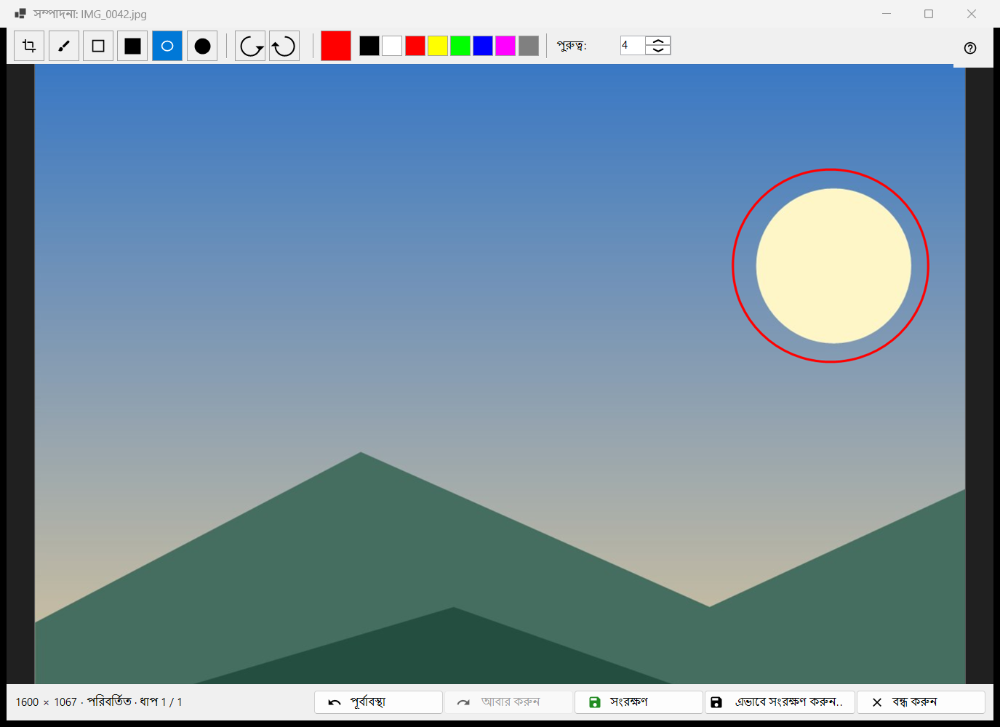
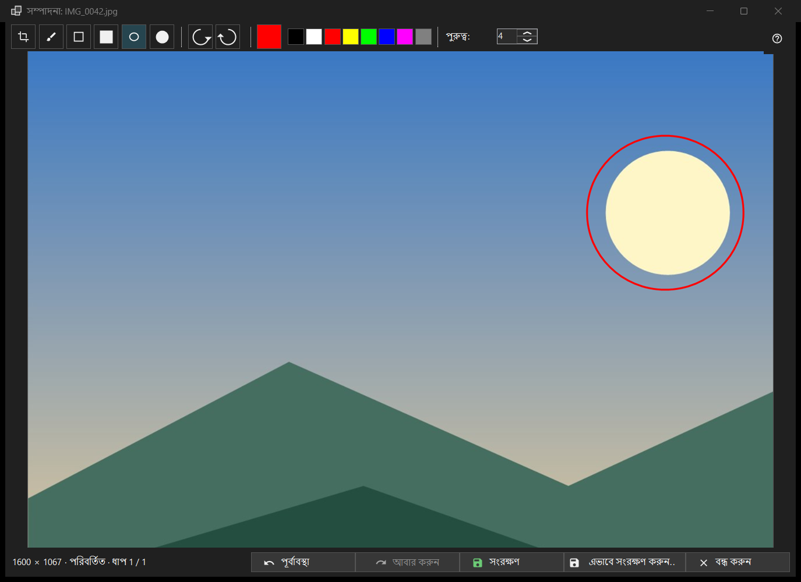

ছবি সম্পাদনা
এটি কীসের জন্য
একটি স্থির ছবির জন্য ছোট সম্পাদক: আকার আঁকুন, ছাঁটুন, ঘোরান ও উল্টান, তারপর মূল ফাইলের ওপর বা নতুন ফাইল হিসেবে সংরক্ষণ করুন। এটি খোলে, শিরোনামে ছবির ফাইলের নামসহ, টুলবারের সম্পাদনা বোতাম বা ছবির মেনুর প্রথম আইটেম থেকে, এবং শুধু স্থির ছবির জন্য (অ্যানিমেশনের জন্য নয়)। সম্পাদক ফাইলটি আবার পড়ে এবং নিজের কপিতে কাজ করে।


এই ক্রমে
- ভিউয়ারে সম্পাদনা চাপুন।
- একটি টুল, রং ও পুরুত্ব বেছে নিন।
- ছবিতে আঁকুন, বা ছাঁটুন, ঘোরান বা উল্টান; পূর্বাবস্থা এক ধাপ পিছনে নেয়।
- মূল ফাইলের ওপর লিখতে সংরক্ষণ চাপুন, বা নতুন ফাইলের জন্য এভাবে সংরক্ষণ করুন.. চাপুন।
- উইন্ডো বন্ধ করুন; অসংরক্ষিত পরিবর্তন থাকলে প্রশ্নের উত্তর দিন।
উপাদানসমূহ
টুল
স্ট্রিপে: ছাঁটাই, ব্রাশ, আয়ত, ভরাট আয়ত, উপবৃত্ত ও ভরাট উপবৃত্ত। কী হলো C, B, R ও O (ভরাটগুলোর কোনো কী নেই)। আয়ত বা উপবৃত্ত আঁকার সময় Shift চেপে ধরলে বর্গ বা বৃত্ত পাওয়া যায়। কোনো টুলের ওপর মাউস রাখলে তার নাম ও কী দেখা যায়।
রং ও পুরুত্ব
রঙের বোতাম রঙের ডায়ালগ খোলে, এবং তার পাশে আটটি দ্রুত নমুনা আছে (কালো, সাদা, লাল, হলুদ, লাইম, নীল, ম্যাজেন্টা, ধূসর)। পুরুত্ব ছবির 1 থেকে 64 পিক্সেল পর্যন্ত (ডিফল্ট 4); [ ও ] কী এক এক করে বদলায়। রং ও পুরুত্ব সব টুলে একই।
ছাঁটাই
ছাঁটাই টুল দিয়ে ছবির ওপর একটি ফ্রেম টানুন। ছাঁটাই প্রয়োগ করুন বোতাম শুধু ফ্রেম থাকলেই দেখা যায়। Enter একই কাজ করে; Esc না ছেঁটে ফ্রেম সরিয়ে দেয়। প্রয়োগ করলেই কেবল ছবি কাটা হয়।
ঘোরানো ও উল্টানো
বাঁয়ে ঘোরান (Ctrl+[) ও ডানে ঘোরান (Ctrl+]) পিক্সেল ঘোরায়। H ও V কী ছবিকে আনুভূমিক ও উল্লম্বভাবে উল্টায়। এতে ছবিটি নিজেই বদলায়, ভিউয়ারের R-এর মতো নয়, যা শুধু প্রদর্শন ঘোরায়।
পূর্বাবস্থা ও আবার করুন
পূর্বাবস্থা (Ctrl+Z) ও আবার করুন (Ctrl+Y বা Ctrl+Shift+Z) মেমরির সীমার মধ্যে সর্বোচ্চ 20 ধাপের ইতিহাসে চলে। স্ট্যাটাস বার আকার দেখায় এবং পরিবর্তনের পরে পরিবর্তিত লেখার সঙ্গে ধাপ N / M; সীমার কারণে সবচেয়ে পুরোনো ধাপ বাদ গেলে লেখে পুরোনো ধাপ বাদ দেওয়া হয়েছে: মেমরির সীমা।
সংরক্ষণ
সংরক্ষণ (Ctrl+S) মূল ফাইলের ওপর লেখে এবং শুধু পরিবর্তনের পরেই সক্রিয় হয়; তার আগে এর টুলটিপ বলে সংরক্ষণের কিছু নেই: ছবিটি পরিবর্তন করা হয়নি। JPEG-এর জন্য প্রতি সেশনে একবার জিজ্ঞাসা করা হয়: JPEG আবার সংকুচিত হবে - এটি ফেরানো যায় না। ছবি তোলার তারিখ ও বাকি EXIF তথ্য থেকে যায়। ফাইলটি একটি অস্থায়ী নামে লেখা হয় এবং বদলে বসানো হয়; সংরক্ষণ ব্যর্থ হলে কারণসহ উইন্ডো খোলা থাকে।
এভাবে সংরক্ষণ করুন..
নামের সঙ্গে (সম্পাদিত) যোগ করে একটি ফাইল ডায়ালগ খোলে। ফরম্যাট হলো PNG, JPEG, BMP, TIFF ও WebP; অন্য যেকোনো ফরম্যাটের ছবি PNG হিসেবে প্রস্তাব করা হয়। আর্কাইভের অস্থায়ী ফোল্ডার প্রত্যাখ্যান করা হয়। মূল ফাইলের ওপর সংরক্ষণের পরে ভিউয়ার সেটি আবার লোড করে; একই ফোল্ডারের নতুন ফাইল খোলা হয়; অন্য কোথাও হলে তার নাম স্ট্যাটাস বারে বলা হয়।
যখন সংরক্ষণ বন্ধ
স্ট্যাটাস বার কারণসহ মূল ফাইলের উপরে লেখা যাবে না বলে: এই ফরম্যাট লেখা হয় না, ফাইলটি কেবল পড়ার জন্য, লেখার অনুমতি নেই, অন্য কোনো প্রোগ্রাম ফাইলটি ধরে রেখেছে, ফাইলে একাধিক পৃষ্ঠা বা ফ্রেম আছে (শুধু প্রথমটি সম্পাদিত হয়), সেটি আর্কাইভের ভেতরে, বা নেই। এভাবে সংরক্ষণ করুন.. তখনো পাওয়া যায়।
বন্ধ করা
বন্ধ করুন বা Esc উইন্ডো বন্ধ করে; Esc আগে চলমান স্ট্রোক বাতিল করে, তারপর ছাঁটাইয়ের ফ্রেম সরায়। অসংরক্ষিত সম্পাদনা থাকলে প্রশ্নটি হলো: পরিবর্তনগুলি সংরক্ষিত হয়নি - সম্পাদক বন্ধ করে অসংরক্ষিত পরিবর্তন হারাবেন? সংরক্ষণ আগে সংরক্ষণ করে, সংরক্ষণ করবেন না ফেলে দেয়, বাতিল (ডিফল্ট, Esc-ও) সম্পাদকেই রাখে। নিশ্চিতকরণ বন্ধ থাকলেও এই প্রশ্ন করা হয়।